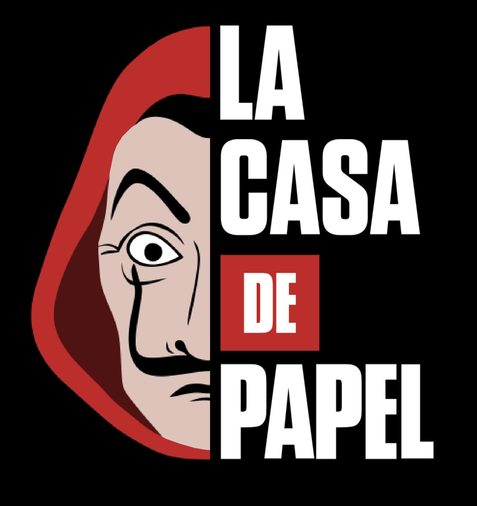

Some information ...

→ First, la casa de papel is a Spanish series produced by Álex Pina. The series will experience international success after its appearance on Netflix.
Why look at the casa de papel ?
→ Why watch this series is not another? I'll tell you: the series has an exciting plot ! There are thousands films of robbery but this story is special. It begins with a man who looks like an intello who recruits 8 crooks: Tokyo, Nairobi, Rio, Moscow, Berlin, Denver, Helsinki and Oslo. They are only code names but each has a specialty: computer engineering, explosive, counterfeit, ... And he embarks on a crazy project: to point the National Factory of coins and stamps from Madrid without stealing money and without killing anyone ! Moreover, this series is full of twists. Indeed, despite a plan finely studied for years, the robbers are humans and they make mistakes. Not to mention the intelligence of the hostages who are ready for anything to escape. There is no fault, the actors in this series are all very good : they play their role wonderfully ! Some people find that this series looks like not seriousness and yet it denounces character traits of our current society such as machismo. Indeed, the series highlights the feminist side of Nairobi and Tokyo which dominate the "macho" personality of Berlin ! This series plays with the psychology of the spectators : they stand on the side of the robbers while they are the "bad guys". And this for only one reason: these robbers have nothing to lose and they only want one thing : to take money without stealing or killing anyone. They are far from the tyrannical and cruel robber that we are used to seeing on our screens. And finally, who has heard this famous music "Bella ciao" and wondered where it came from ? While this music is not funny, however, it's a song of Italian revolt sung by the resistance fighters of the Second World War to denounce the fascite regime. A piece that very illustrates the rebellion of the robbers ...